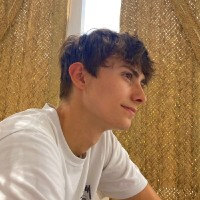

Javier Bautista Luis
Estudiante de Ingeniería Informática con foco en ser arquitecto de hardware. Orientado a la microarquitectura, el procesamiento vectorial y el entendimiento a bajo nivel, bajando a los conceptos físicos y transistores cuando es necesario.
Experiencia
Arquitecturas Vectoriales y Modelado gem5 — UCM
Investigación de grado. Modelado de extensiones de arquitectura vectorial (Vitruvius y Ara) utilizando el simulador de microarquitectura gem5.
Involucra la extracción y reproducción de trazas RAVE, el modelado preciso de archivos de registros vectoriales y la evaluación rigurosa del rendimiento en el subsistema de memoria.
Administrador de Sistemas y Desarrollo Freelance
Durante 2024 y 2025 trabajé como freelancer desarrollando automatizaciones, sistemas de atención al cliente y administrando infraestructuras en entornos Linux para clientes internacionales. Estas tareas fortalecieron mi capacidad analítica a la hora de resolver problemas y configurar entornos técnicos complejos.
Profesor de Clases Particulares | Bachillerato
Llevo 2 años y medio impartiendo clases particulares de Matemáticas, Dibujo Técnico y Física a alumnos de primero y segundo de bachillerato. Esta labor ha potenciado mi capacidad de comunicación técnica y pedagogía: interiorizar a fondo los fundamentos para explicarlos de forma estructurada y comprensible.
Proyectos
RELF — Simulador de resolución de símbolos y parser de binarios ELF
Herramienta desarrollada en C para simular y analizar la resolución dinámica de símbolos externos en ejecutables ELF de 32 y 64 bits (desde la sección .dynsym del binario hasta la biblioteca compartida correspondiente, emulando los mecanismos de PLT/GOT). Integra además un parser de dependencias internas y headers ELF para facilitar la comprensión de enlaces en tiempo de ejecución.
Modelado y Simulación de Arquitecturas Vectoriales RISC-V en gem5
Investigación y modelado microarquitectónico de extensiones vectoriales RISC-V (como Vitruvius y Ara) utilizando el simulador gem5. Enfoque en la captura y reproducción de trazas RAVE, dimensionamiento de archivos de registros vectoriales y evaluación del rendimiento del subsistema de memoria.
Análisis de Tráfico de Red y Filtrado Avanzado con NFTables
Laboratorio de seguridad y redes con topología segregada implementando proxies directo e inverso sobre Linux. Aplicación de filtrado granular mediante hooks de NFTables y análisis de paquetes en servidores web Apache2/Nginx para detección de anomalías y estudio de patrones de tráfico cliente-servidor.
Habilidades / Conocimientos
Habilidades técnicas
- Programación a bajo nivel y simulación: C, C++, VHDL, Python, Java.
- Simulación de microarquitectura y procesadores vectoriales utilizando el framework gem5.
- Familiaridad con el ecosistema RISC-V, extensiones vectoriales y jerarquías de memoria (SRAM).
- Conceptos de lógica digital a bajo nivel, incluyendo tecnología CMOS, mapas de Karnaugh y estados de alta impedancia.
Habilidades profesionales y de investigación
- Mentalidad investigadora enfocada en entender profundamente el "porqué" de las cosas en hardware.
- Resolución estructurada de problemas técnicos complejos en entornos de baja abstracción.
- Colaboración activa en entornos de investigación académica universitaria.
- Comunicación asertiva y formal orientada a perfiles técnicos, profesores e investigadores.
Sobre mí
Soy estudiante de Ingeniería Informática en la Universidad Complutense de Madrid, firmemente orientado a la carrera de Arquitecto de Hardware.
Me apasiona desentrañar y construir las "tripas" de la computación. No me conformo con la capa de abstracción del software; busco entender los sistemas bajando a la microarquitectura, la lógica digital e incluso los conceptos físicos a nivel de transistor o de tecnología CMOS cuando el escenario lo requiere.
Actualmente concentro mis esfuerzos en la investigación y modelado del procesamiento vectorial, el ecosistema RISC-V y la programación de aceleradores, preparando una base sólida para futuros estudios de posgrado e investigación.
Líneas de interés y especialización actual:
- Exploración y modelado de arquitecturas y extensiones vectoriales RISC-V (RVV, IME).
- Perfeccionamiento del uso del framework de simulación de microarquitectura gem5.
- Estudio continuo de paradigmas avanzados de Arquitectura de Computadores y subsistemas de memoria.
Estudios / Formación
Grado en Ingeniería Informática (Rama de Ciencias de la Computación) — Universidad Complutense de Madrid
Titulado en Enseñanzas Profesionales de Música — Conservatorio Profesional de Música de Majadahonda
Idiomas
Español: Nativo
Inglés: Nivel B2 - C1
Competencia profesional técnica (lectura y redacción fluida de papers y documentación)